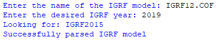

- Generated by
 1.8.15
1.8.15
|
SlugSat ACS
0.2.0
This repository contains source code for the Attitude Control System (ACS) onboard SlugSat.
|
The International Geomagnetic Reference Field (IGRF) model is updated every 5 years and is used to estimate the inertial magnetic field for attitude estimation. IGRF12 is the current model as of 2019. In 2020, a new model will be released and the current IGRF coefficients will need to be updated. The steps to update these coefficients are provided below.
Open the make_headers.py python script and follow the instructions in the window. An example is shown below
 1.8.15